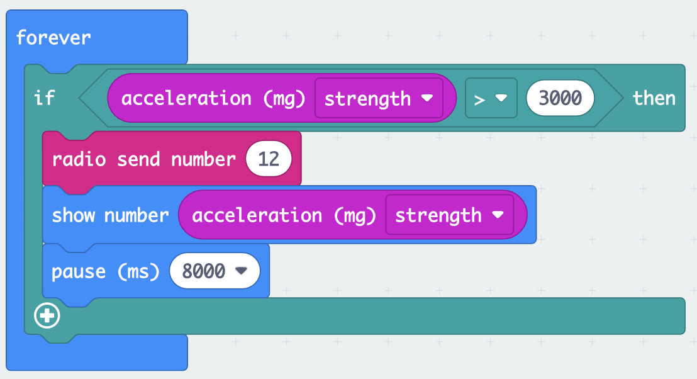

My Project
In our Year 10 Digital Technology class, we built games for people to play at the Year 10 Market Day. My project was a punching machine. We approched the semester not knowing what we were doing, but we soon found out that it wasn't coding so I was happy. It was making a carnival game.
The Planning
Firstly we had to create a group Montana, Mouse, and I decided we would work very well together so we did that. A week later a new girl joined our group I think her name was zoe? We then scratched our heads and came up with a awesome idea. A PUNCHING MACHINE. We didn't really know how to approach it so we just started putting something together. A sturdy structure made out if E-pro8 bars, with rotatiing gears on the top. We actually didn't know what that was yet but all goods I guess. We then drew up a slight plan and got to work.


The Making
We created the plan in real life with the epro-8 stuff and a bit of brain power, it came out really cool in my opinion. It was definitely going to be a hit at market day. We found the boxing gloves took alot of time as we had to keep on trying different ways of making it. We tried using all clay first but that took way to much time and it was really heavy and didn't really look like a glove. We came up with a final solution though that worked well. We used a hot chocolate container as well as tinfoil,paper,clay and paint. We also had to think alot about making the actual punching bag. We thought a pillow was a good idea but how would we stick it to the structure was the next problem. Velcro was the final answer to get it to stick and not break the whole structure when you punch it. We also made some cool signs to pop onto the structure to draw people in.
The testing
We had to test our products before we made the real thing so one of the main things we had to test was the pillow we had a couple prototypes. Here is a image of our first tester.

It may look a bit rough but it was the perfect starting point.
The Coding
The dreadful coding. Luckily I was away this week when my group did the coding. But it looked something like this.
This code is to show what the microbit on the back of the pillow says on a different microbit so that we can see what the score is. It is also caculating the score from the acceleration the pillow gets from someone punching it.
Setting up
Setting up was one of the hardest things we had to carry everything from the digi room to the dining room lawn. Huge work out. I thought I should do that as I am not going to be helping when the people come to punch. Here is a image of our stool set up.

As you can see a pretty lit set up.
MARKET DAY
Now it was time for the actual market day. Unfortunatley Zoe, Montana and I also had other groups for our business class so we couldn't be at the stool on the day but it had success. We had a prize up for grabs to draw people in. It was if you win by the end of the day you get $10. So people would want to keep doing it until they are at the top. Here is some photos of some big punchers.


We made a total of $20 as we had to give Greer Pratt $10 as she was the biggest hitter. So overall we made $5 each.
The Website
We then had to make this website for our final mark. I may or may not have done much at the start but then I started using my class time well to create this sick website. I learnt alot of new things well making this and I am sure I will be able to make lots of cool websites like this in the future
Photos
Here are some photos.